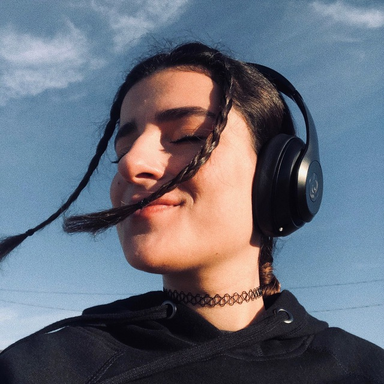

Mehrara Sarabi

Objective
Self-motivated Game Programming graduate from George Brown College with a GPA of 4.0 and 4+ years of experience in game development.
Seeking a challenging position as a Game Programmer in Toronto to leverage my skills in C++, C#, Direct3D, OpenGL, and engine development.
Education
The Complete Web Development Bootcamp - 2023
-
Game Programming at George Brown College - April 2022
- Graduated with a GPA of 4.0.
Professional Experience
-
Game Developer at Nibbit AI - Feb 2023 to May 2023
- Collaborated with the design team to brainstorm and design mini games.
- Translated design ideas into clean and efficient code.
- Conducted playtests, identified issues, and ensured bug free releases.
- Incorporated feedback to bring company’s vision to life.
-
Mathematics Tutor at George Brown College - Sep 2021 to April 2022
- Provided one on one tutoring for various math courses to students with diverse learning styles.
- Fostered a deeper understanding of math concepts to enhance problem solving skills.
- Utilized a range of tutoring methods to maximize effectiveness.
- Managed time efficiently to ensure productive tutoring sessions.
- Offered detailed resources for practice outside the tutoring lessons.
-
Office Manager at Dr Appleby Dentistry - June 2020 to present
- Display tact and diplomacy in patient interactions.
- Manage insurance claims and payment processing.
- Maintained meticulous daily, weekly, and monthly account balancing.
- Provided direct contact information for addressing patient concerns.
-
Student Life Ambassador at George Brown College - Sept 219 to April 2020
- Delivered exceptional customer service, welcoming students, and visitors.
- Handled daily requests and inquiries with professionalism.
- Supported students throughout their college experience.
- Advised and referred students as needed.
Technical Skills
- Programming languages: C++, C#, Swift
- Software: Unity, Unreal Engine, Visual Studio, XCode
- Concepts: Object-oriented programming, multithreading
- Source Control: GitHub, Perforce
- Project management: Scrum and Agile using Jira and Trello
Awards
- GBC IT Leadership Award
- Dean's honour List